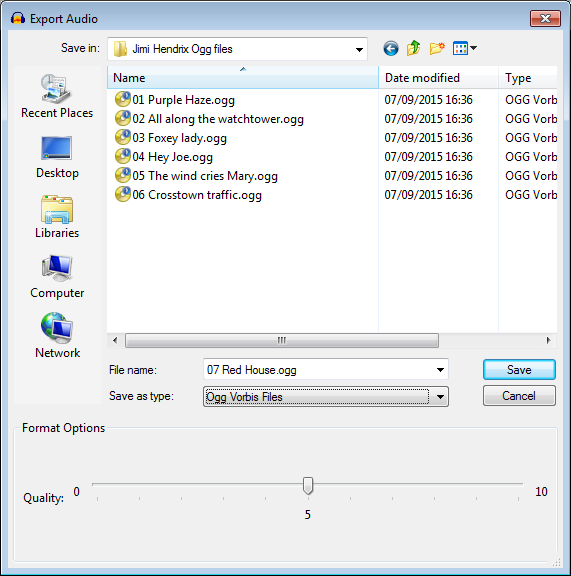

Ogg Vorbis Export Options
The Ogg Vorbis export option uses the open-source compressed, lossy Vorbis codec inside an Ogg format container. Ogg format can be played in Windows Media Player and iTunes, but requires additional codecs to be downloaded. Ogg is a popular format for streaming applications.
Audacity does not yet support use of the Speex low bit rate voice codec within Ogg.
- Accessed by: then choosing Ogg Vorbis Files from the Save as type dropdown menu.
- 
- Also accessed by: then choosing Ogg Vorbis Files from the Save as type dropdown menu. In this case the options dialog will appear in the center of the Export Multiple dialog.
Ogg Vorbis Export Setup
- Quality: Choose a quality setting from 0 (lowest) to 10 (best). The current quality setting is displayed in the center of the slider. The default level of 5 typically produces a file of about the same size as Audacity's default 128 kbps MP3 encoding, but of higher quality. Higher OGG quality settings mean a larger file size, because a higher overall bit rate will be used.
OGG encoding is technically a form of VBR or variable bit rate encoding, as opposed to the CBR or constant bit rate encoding used by default when exporting MP3 files.
This means that in order to maintain consistent quality throughout a track, a higher bit rate will be used when encoding a complex piece of audio (such as a full orchestral passage) than when encoding a solo voice or instrument. A recording which has more complex audio will produce a larger file. Increasing the sample rate in Selection Toolbar will increase the bit rate and so the file size (and vice versa).